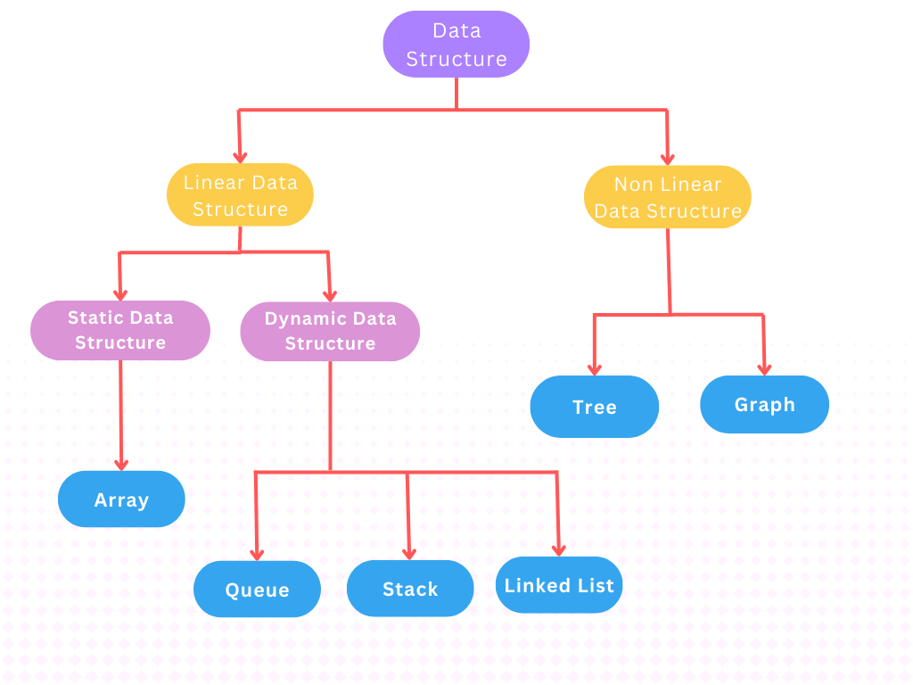

DSA
Introduction
What is DSA?
The full form of DSA is Data Structures and Algorithm. So What does Data Structures and Algorithm means?
For that first we need to know what data exactly means.
What is Data?
Data means collection of meaningful information in a structured manner which helps to perform some operations on it and used to do anaylsis.
What is Data Structure?
Data structure is a particular way of storing and organizing data in a computer so that it can be used effieciently in memory. A data structure is a special format for organizing and storing data.
Classification of Data Structures:

- Linear Data Structure:
The data elements arranged sequentially or linearly is called Linear Data Structure. Linear data structure are further divided into two types Static and Dynamic.
-
• Static Linear Data Structure:
Static data structure has a fixed memory size. It is easier to access the elements in a static data structure.
Array is an example of static data structure.
-
• Dynamic Linear Data Structure:
In dynamic data structure, the size is not fixed. It's size can be updated during runtime which is memory efficient.
Linked List is an example of dynamic data structure.
- Non-Linear Data Structure
The data elements which are not placed sequentially or linearly are called non-linear data structures.

 © PMR
Suggestions:
© PMR
Suggestions: